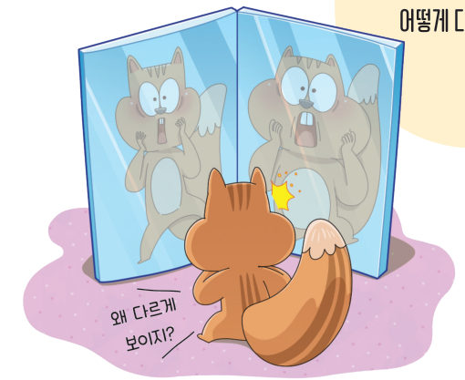
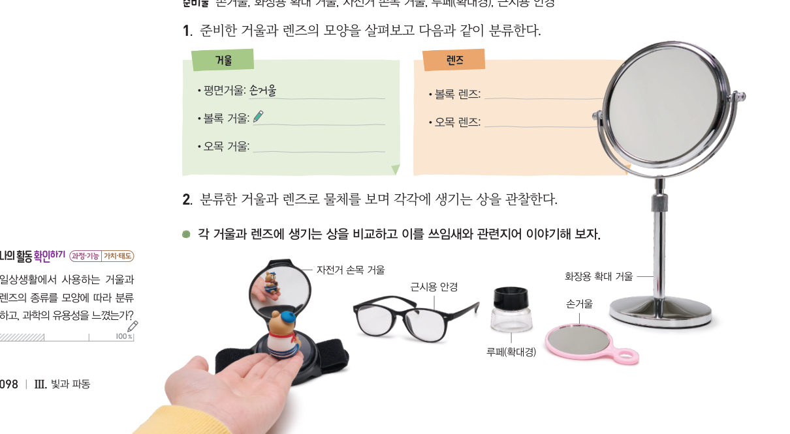
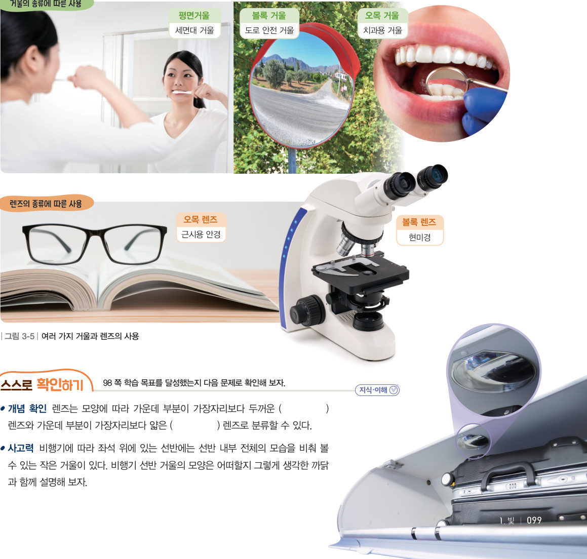

살아있는 교과서 · Ⅲ. 빛과 파동 · 1. 빛 · 03 98~99쪽
생활 속
생활 속
거울과 렌즈
“왜 다르게 보이지?” 두 거울 면의 모양은 어떻게 다를까? 생활 속 거울과 렌즈를 모양에 따라 분류하고, 평행한 빛을 비추어 빛이 모이는지 퍼지는지 관찰해 보자.
🎯 이 단원을 배우면 — 일상생활에서 사용하는 거울과 렌즈의 종류를 분류할 수 있다.
해 보기 · 자료 수집하기일상생활에서 사용하는 거울과 렌즈의 종류 분류하기 98쪽

물건을 누른 뒤 알맞은 상자를 눌러 분류해 보자. 잘못 넣은 것은 상자 안에서 눌러 빼낼 수 있어요.
💬각 거울과 렌즈에 생기는 상을 비교하고 이를 쓰임새와 관련지어 이야기해 보자.
교과서거울과 렌즈의 분류와 쓰임 99쪽
거울은 모양에 따라 평면거울, 볼록 거울, 오목 거울로 분류할 수 있다. 세면대 거울이나 무용실 거울과 같이 평면거울은 물체의 모습을 그대로 볼 때 사용한다. 도로 안전 거울이나 자동차 측면 거울과 같이 볼록 거울은 넓은 범위를 볼 때 사용한다. 치과용 거울이나 화장용 확대 거울과 같이 오목 거울은 물체를 크게 볼 때 사용한다.
렌즈는 모양에 따라 가운데 부분이 가장자리보다 두꺼운 볼록 렌즈와 가운데 부분이 가장자리보다 얇은 오목 렌즈로 분류할 수 있다. 현미경과 같이 볼록 렌즈는 물체를 크게 보기 위해 사용한다. 또 ●근시용 안경과 같이 오목 렌즈는 멀리 있는 물체를 선명하게 보기 위해 사용한다.
●근시 가까이 있는 물체는 잘 보이지만 멀리 있는 물체는 잘 보이지 않는 경우를 근시라고 한다.

빛 따라가기평행한 빛을 비추면?
거울이나 렌즈를 고르면 왼쪽에서 평행한 빛이 들어와요. 빛이 모이는지 퍼지는지 관찰해 보자.
1평행한 빛을 모으는 것은
스스로 확인하기98쪽 학습 목표를 달성했는지 확인해 보자 99쪽
1개념 확인 편의점의 감시 거울은 범위를 볼 수 있도록 거울을 사용한다.
2사고력 근시인 사람이 오목 렌즈 안경을 쓰는 까닭을 써 보자.
5분 테스트생활 속 거울과 렌즈
1평면거울은 물체의 모습을 볼 때, 볼록 거울은 범위를 볼 때, 오목 거울은 물체의 모습을 볼 때 사용한다.
4거울의 종류와 이용하는 예를 연결하시오.
| 평면거울 | |
| 오목 거울 | |
| 볼록 거울 |
6가운데 부분이 가장자리보다 두꺼운 렌즈, 얇은 렌즈로 분류한다. 볼록 렌즈는 물체를 보기 위해, 오목 렌즈는 있는 물체를 선명하게 보기 위해 사용한다.
9볼록 렌즈를 이용하는 예를 모두 고르시오.
스스로 정리하기생활 속 거울과 렌즈
📝거울과 렌즈의 분류
거울: 평면거울(그대로), 거울(넓은 범위), 오목 거울(크게)
렌즈: 볼록 렌즈(크게 보기), 렌즈(멀리 있는 물체를 선명하게)
렌즈: 볼록 렌즈(크게 보기), 렌즈(멀리 있는 물체를 선명하게)
| 평가 기준 | 스스로 평가 |
|---|---|
| 과정·기능 거울과 렌즈의 종류를 모양에 따라 분류할 수 있는가? | |
| 가치·태도 거울과 렌즈를 분류하며 과학의 유용성을 느꼈는가? |
제출학생 정보 · 제출하기
모든 활동을 마친 뒤 제출하면 전체가 한 번에 채점되고 피드백이 나타나요. 답안은 선생님 스프레드시트(중2 탭)에 기록돼요.